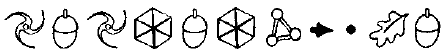
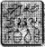

KOBOİ LABORATUARLARI, DOĞU KIYISI, HAVEN ŞEHRİ YERALTI BİRİMİ
KOBOİ Laboratuarları, Haven’ın Doğu Kıyısındaki kayalıkların içine inşa edilmişti. Beş tarafı yarım millik granitle çevrili ve girişi yalnızca ön kapıdan sağlanan, sekiz katlı bir binaydı. Yönetim güvenlik önlemlerini arttırmıştı, bu konuda onları kim suçlayabilirdi ki? Ne de olsa, B’wa Kell’in kundakçılık saldırıları özellikle Koboi’yi hedef almıştı. Konsey şirkete özel silah izinleri verecek kadar ileri gitmişti -Koboi iflas edecek olursa, Haven Şehrinin güvenlik sistemi de onunla birlikte iflas ederdi.
Koboi Laboratuarlarına zorla girmeye kalkışan her B’wa Kell goblini davetsiz konukları havaya uçurmadan önce, inceden inceye araştıran DNA-kodlu bir şok topuyla karşılaşacaktı. Binada tek bir kör nokta, gizlenecek tek bir yer yoktu. Sistem tamamen güvenilirdi.
Ama bu durum goblinleri hiç rahatsız etmiyordu. Laboratuarların savunma sistemi yanlış zamanda gizlice içeri girmeye çalışan LEP elemanlarını uzaklaştırmak üzere, özel olarak tasarlanmıştı. Goblin üçlüsünü maddi açıdan destekleyen kişi, Opal Koboi’nin ta kendisiydi. Koboi’ye yapılan saldırılar yalnızca dikkatleri kişisel iş ilişkilerinden farklı bir yöne çevirmek içindi: küçük pixie pil harekâtının ve B’wa Kell’in giderek artan eylemlerinin arkasındaki beyindi. Ya da beyinlerden biri diyelim. Peki ama sınırsız bir servete sahip olan biri neden bir goblin tünel çetesiyle ortak olmak istemişti ki?
Doğduğu günden beri Opal Koboi’den çok fazla bir şey beklenmemişti. Pricipality Hill’de zengin bir pixie ailesinin çocuğu olarak dünyaya gelmişti. Anne ve babasının tek dileği genç Opal’in özel bir okula giderek eften püften bir Sanat diploması alması, sonra da kendisine uygun bir müdür yardımcısıyla evlenmesiydi.
İşin aslı, babası Ferall Koboi’nin hayalindeki kız çocuğu orta derecede bir zekâya sahip, oldukça güzel ve elbette ki halinden memnun olmalıydı. Ama Opal, Ferall’in arzu ettiği kişilik özelliklerine sahip değildi. Henüz on aylıkken yardımsız yürümeye başlamıştı, bir buçuk yaşına geldiğinde beş yüz sözcüklük bir dağarcığa sahipti. İkinci doğum gününden önce ilk sabit diskini söküp yeniden takmıştı.
Opal erken gelişti, büyüdükçe dikbaşlı ve güzel bir kız oldu. Bu tehlikeli bir bileşimdi. Ferall onu sayısız kez karşısına oturtup iş hayatını erkek pixielere bırakması gerektiğini anlatmıştı.. Sonunda Opal babasıyla görüşmeyi reddetti. Şeytani kini endişe vericiydi.
Ferall endişelenmekte haklıydı. Opal’in üniversitede ilk yaptığı iş Sanat Tarihi eğitimini bir kenara bırakıp erkeklerin çoğunlukta olduğu Üstat Mühendisler Birliğine geçmek oldu. Ve diplomasını eline alır almaz, babasına bire bir rakip bir dükkan açtı. Arkasından patentler geldi. Enerji verimliliğini iki katma çıkaran bir motor susturucusu, üç boyutlu bir eğlence sistemi ve tabii ki uzmanlığı olan DoubleDex kanatları.
Opal babasının işini batırdıktan sonra, değeri düşmüş hisse senetlerini satın almaya başladı ve şirketleri Koboi Laboratuarları adı altında birleştirdi. Beş yıl içerisinde Koboi Laboratuarları tüm şirketlerden fazla sayıda savunma sözleşmesi imzalamayı başardı. On yıl içinde, Opal Koboi yaşayan tüm perilerden fazla sayıda patent aldı, Foaly hariç.
Ama bu yeterli değildi. Opal Koboi monarşiden bu yana, bir tek peri tarafından bile elde edilmemiş bir gücün peşindeydi. Neyse ki bu özel arzusunu yerine getirmekte kendisine yardımcı olabilecek birini tanıyordu. Bu üniversite yıllarından tanıdığı, hayalleri kırılmış bir LEP memuruydu. Briar Cudgeon adında biri...
Briar’ın LEP’i küçük düşürmek için geçerli bir nedeni vardı; ne de olsa, Julius Root onu herkesin önünde rezil etmiş ve bu konuda cezalandırılmamıştı. Bununla da kalmamış, Artemis Fowl Olayında neden olduğu felaketler yüzünden binbaşı rütbesi de elinden alınmıştı...
Haven’in en şık restoranlarından birinde, Cudgeon’ın içkisine bir gerçeklik hapı atmak Opal için hiç de zor olmamıştı. Opal sapkın Cudgeon’ın LEP’i devirmekle ilgili planını neşe içinde dinlemişti. Bu oldukça ustaca bir plandı. Tek gereksinim duyduğu bir ortaktı. Bu da büyük altın rezervleri ve emrinde güvenli bir tesisi olan bir ortaktı. Opal ona her ikisini de sağlamaktan dolayı mutluydu.
Cudgeon tesise girdiğinde, Opal uçan koltuğunda bir kedi gibi kıvrılmış, Polis Plaza da olanları gizlice dinliyordu. Mühendisleri sistemin performansını arttırırken, Opal de LEP’in bilgisayar ağına casus kameralar yerleştirmişti. Bu kameralar Polis Plaza’nın kendi güvenlik kameralarıyla tıpatıp aynı frekansta çalışıyor üstelik de güçlerini LEP’in optik liflerinden sızan ısıdan elde ediyorlardı. Fark edilmeleri olanaksızdı.
“Şey?” dedi sordu Cudgeon, alışılmış kabalığıyla.
Koboi arkasını dönme zahmetine bile girmedi. Gelen Briar olmalıydı. Özel çalışma odasına girmek için gereken çip yalnızca onda vardı. Parmak boğumunun altına dikiliydi.
“En son pil siparişimizi kaybettik. LEP’in her zamanki kazıklarından biri daha. Şanssızlık oldu.”
D’Arvit! diye küfretti Cudgeon. “Her neyse, fark etmez. Elimizde yeterli bir stok var'. Ve LEP için bunlar yalnızca sıradan piller, nasılsa.”
Opal derin bir soluk aldı. “Goblinler silahlıydı...” “Ciddi olamazsın.”
“Üzerlerinde Yumuş ak bur unlar vardı.”
Cudgeon yumruğunu masaya geçirdi. “Salaklalar! Bu silahları kullanmamaları konusunda onları uyarmıştım. Şimdi Julius bir şeylerin döndüğünü anlayacak.”
“Anlayabilir,” dedi Opal, sakin bir sesle. “Ama bizi durduracak gücü yok. Onlar olayı çözünceye kadar iş işten geçmiş olacak.”
Cudgeon gülümsemedi. Bir yılı aşkın süredir hiç gülümsememişti. Aksine kaş çatışı daha da belirginleşmişti.
“Güzel. Zamanım yakında doluyor... Aslında belki de kendi pillerimizi kendimiz yapmalıydık,” diye yüksek sesle düşündü.
“Hayır. Yalnızca bir fabrika kurmak bile, bizi iki yıl geriletirdi, üstelik Foaly’nin onu fark etmeyeceği de kesin değildi. Başka şansımız yoktu.”
Koboi ortağıyla yüz yüze gelmek için döndü. “Felaket görünüyorsun. Sana verdiğim şu merhemi kullandın mı?”
Cudgeon başını yavaşça okşadı. Korkunç kabarcıklarla doluydu. “İşe yaramıyor içinde kortizon var. Kortizona alerjim var.”
Cudgeon’ın durumu hiç de alışıldık değildi, hatta eşine rastlanmayacak türdendi. Geçen yıl Fowl Malikânesinin kuşatılması sırasında, Yarbay Root tarafından ilaçla bayıltılmıştı. Ne yazık ki bu uyuşturucu eski kumandan vekilinin denediği yasaklanmış bellek-hızlandırıcı maddeyle bir arada kullanılınca olumsuz bir etki yaratmıştı. Cudgeon erimiş katranı andıran bir alın ve sarkık bir gözle öylesine kalakalmıştı. Çirkin ve rütbesi elinden alınmış; bu pek iyi bir bileşim sayılmazdı.
“Bu çıbanlarını aldırman gerek. Seni bu halde görmeye katlanamıyorum.”
Bazen Opal Koboi kiminle konuştuğunu unutuyordu. Briar Cudgeon sıradan bir emireri değildi. Cudgeon sakince geleneksel Redboy silahını çekip uçan koltuğun koluna iki el ateş etti. Koltuğun mekanizması benekli plastik yer döşemesinin üzerinde hızla dönüp Opal’i sabit disklerin dizili olduğu masanın karşısında boylu boyunca yere sererek durdu.
LEP’in yüzkarası elf Opal’i sivri çenesinden yakaladı. “Kendini bana bakmaya alıştırsan iyi olur, sevgili Opal. Çünkü kısa süre sonra, bu yüz, gezegenin altındaki ve üzerindeki tüm ekranlara yansıyacak.
Küçük pixie parmaklarını kıvırıp yumruğunu sıktı. Asiliğe, hele hele şiddete hiç alışkın değildi. Ama böylesi zamanlarda, Cudgeon’ın gözlerindeki deliliği fark edebiliyordu. İlaçlar ona büyüsünden ve görünüşünden fazlasına mal olmuştu. Aklına da mal olmuştu.
Sonra birden bire Cudgeon kendine gelip sanki hiçbir şey olmamışçasına Opal’e kalkması için nazikçe yardım etmeye çalıştı.
“Şimdi, tatlım, gelişme raporu. B’wa Keli kan dökmeye niyetli.”
Opal kedi giysisinin önünü düzeltti. “Yüzbaşı Short insan Artemis Fowl’a E37’ye kadar eşlik ediyor.”
“Fowl burada mı?” diye bağırdı Cudgeon. “Elbette! Ondan kuşkulanacaklarını düşünmüştüm. Bu harika! İnsan kölemiz onunla ilgilenir -Carrere hipnotize edildi. Neyse ki bu güce hâlâ sahibim.”
Koboi dudaklarına kan kırmızısı rujunu sürdü. “Carrere yakalanırsa sorun çıkabilir.”
“Merak etme,” diye onu temin etti Cudgeon. “Mösyö Carrere o kadar çok kez hipnotize edildi ki formatlanmış bir disketten bile daha boş. İstese bile hiçbir şey anlatamaz. Bizim pis işlerimizi tamamladıktan sonra, Fransız polisi onu yumuşacık bir hücreye kapatacak.” Opal kıkırdadı. Hiç gülümsemeyen biri için Cudgeon’ın harika bir mizah anlayışı vardı.